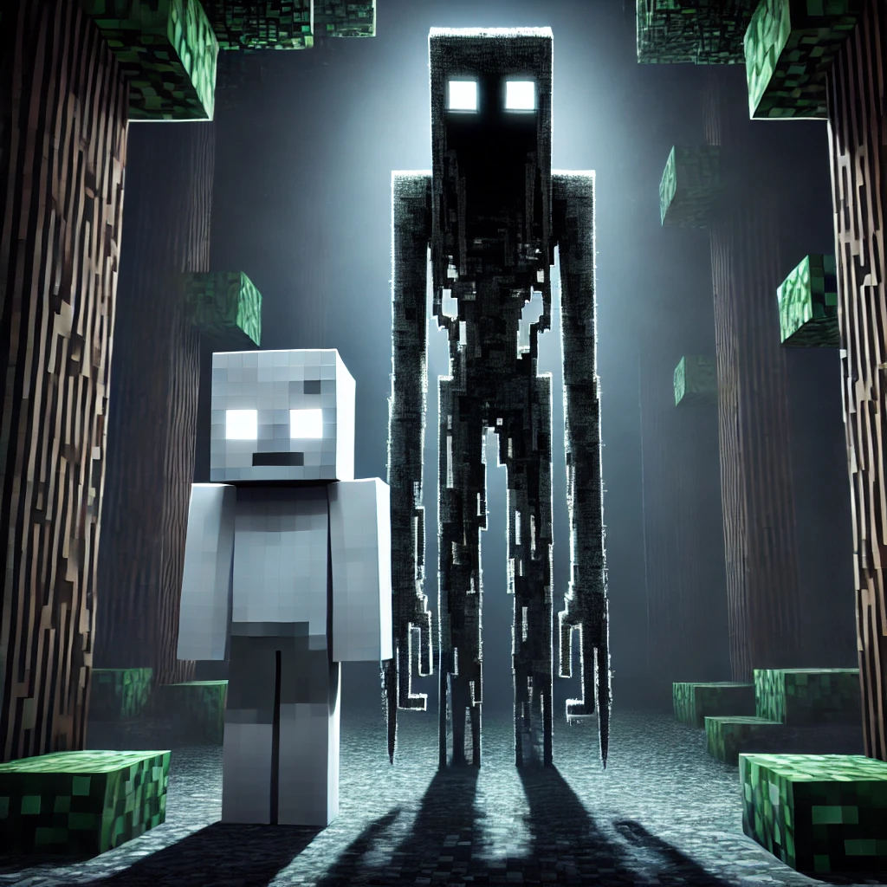

Der neue Minecraft-Mythos: "Der Beobachter"
Eine neue Minecraft-Creepypasta verbreitet sich: Spieler berichten über den unheimlichen Beobachter.
Spieler weltweit berichten über eine unheimliche Figur, die in Minecraft-Welten auftaucht – nur bekannt als "Der Beobachter". Diese Figur soll aus dem Nichts erscheinen, regungslos dastehen und den Spieler mit ihren leeren, weißen Augen anstarren. Es scheint, als ob sie eine Botschaft übermitteln will – eine, die tief im Code von Minecraft verborgen ist.
Was ist Der Beobachter?
Einige Spieler behaupten, der Beobachter tauche auf, wenn sie in der Nähe verlassener Dörfer sind oder tiefe Minen durchstreifen. Andere schwören, dass das Auftauchen des Beobachters ein Vorbote für den Verlust ihres Inventars oder den totalen Absturz ihrer Welt ist. Das unheimlichste Detail? Manche behaupten, dass der Beobachter nur dann erscheint, wenn sie sich unbeobachtet fühlen.